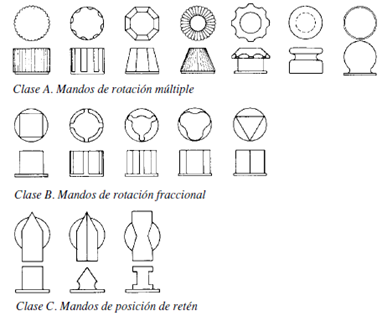

Clasificación
Dispositivos de información visual
El problema de los indicadores visuales estriba en que no sólo dependen de la percepción visual del operario, sino que además debemos considerar las condiciones externas que configuran el espacio de trabajo, y que interfieren en el proceso de captación de la información visual.
Elegiremos aquel dispositivo que, cumpliendo los requisitos, sea el más sencillo de todos. Es por eso que esta selección se debe hacer desde los dispositivos más simples a los más complejos; la elección se efectuará teniendo en cuenta esta premisa, pues la información debe ser la necesaria y suficiente, sin excesos ni defectos

Dispositivos de información sonoros
Son dispositivos que transmiten la información urgente de forma rápida y clara, se manejan con un bit de información (si-no) sin otras alternativas. Su significado debe ser conocido por todos los operarios del lugar de trabajo.
Acostumbran a estar relacionados con alarmas sonoras para llamar la atención, y deben poseer un determinado parpadeo. Como ejemplo citaremos la lámpara parpadeante o fija que alerta sobre la falta de combustible, la alarma visual en las plantas nucleares, las alarmas de las ambulancias y bomberos, etc.
Dispositivos de información táctiles
Generalmente se utilizan para identificar controles en lugares con baja iluminación, o cuando hay gran densidad de controles, o para personas con dificultades visuales graves.
Debido a la redundacia del estímulo, son útiles para evitar errores de manipulación, su óptima selección ayuda a incrementar la fiabilidad del sistema.
